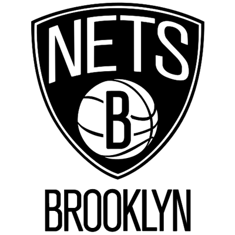

| HOME | TEAMS | NEWS | GAMES | SOBRE |
|
NBA TEAMS
|
||||
|

|
INFORMAÇÕES
Nome: Brooklyn Nets |
|||
|
HISTÓRIA
O Brooklyn Nets é um time de basquete profissional americano baseado no bairro de Brooklyn,
em Nova York. Os Nets competem na National Basketball Association (NBA) como membro da
Divisão Atlântica da Conferência Leste. A equipe joga seus jogos em casa no Barclays Center.
Eles são uma das duas equipes da NBA localizadas na cidade de Nova York; o outro é o New
York Knicks.
|
||||
|
CONQUISTAS
Campeonatos: 17 (1949, 1950, 1952, 1953, 1954, 1972, 1980, 1982, 1985, 1987, 1988,
2000,
2001, 2002, 2009, 2010 e 2020)
|
||||
|
ELENCO
|
||||